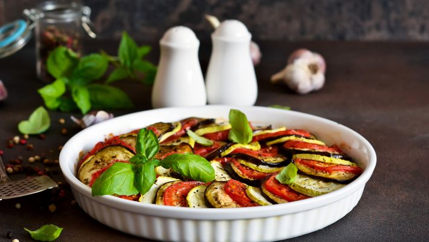

RATATOUILLE
O filme é bom

Igredientes
- 2 abobrinhas
- 2 berinjelas
- 2 cebolas
- 3 tomates
- 1 pimentão verde
- 1 pimentão amarelo
- 1 pimentão vermelho
- azeite a gosto
- alecrim a gosto
- manjericão a gosto
- alho a gosto
- sal a gosto
- louro a gosto
- moho de tomate para cobrir o fundo de forma